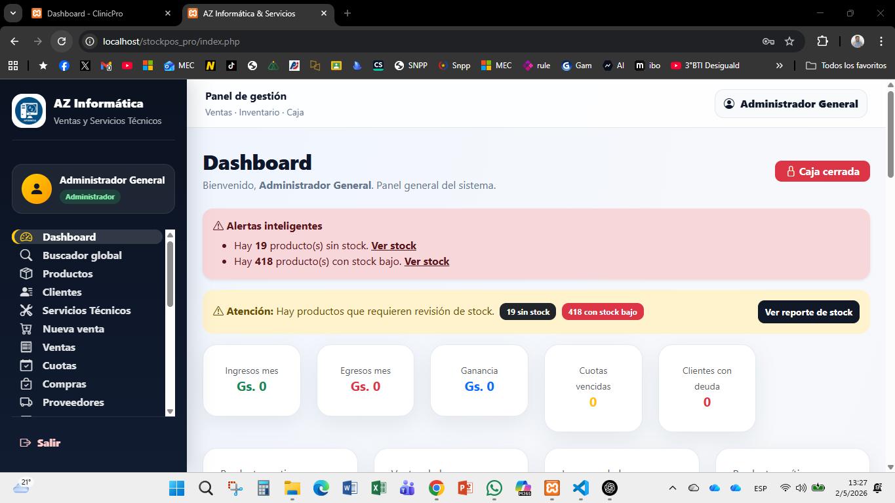
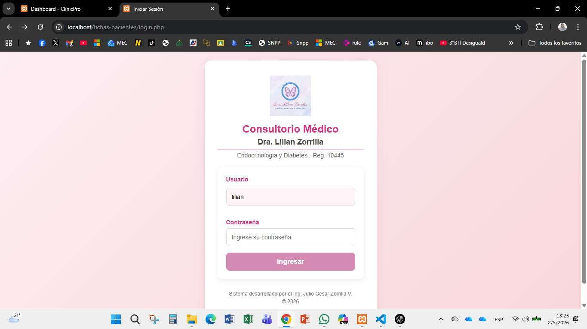
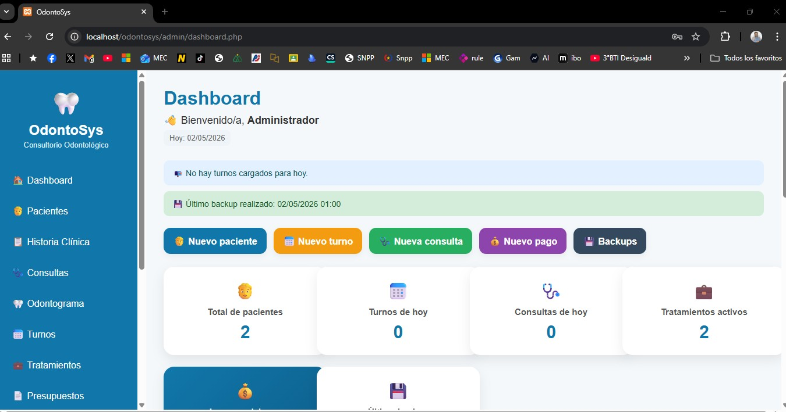
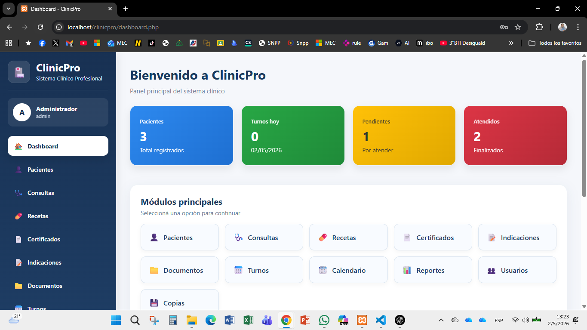
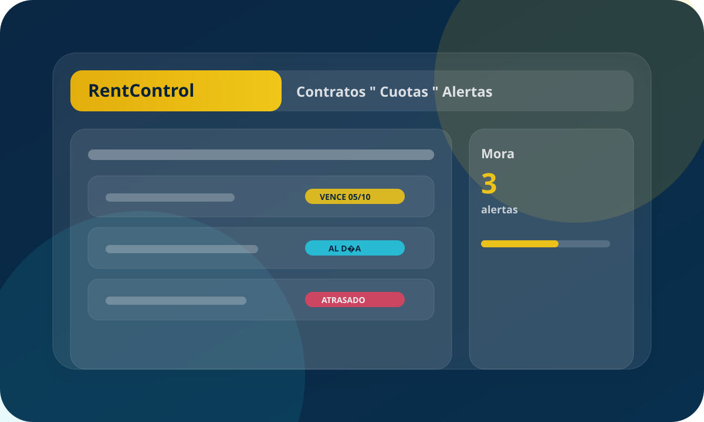
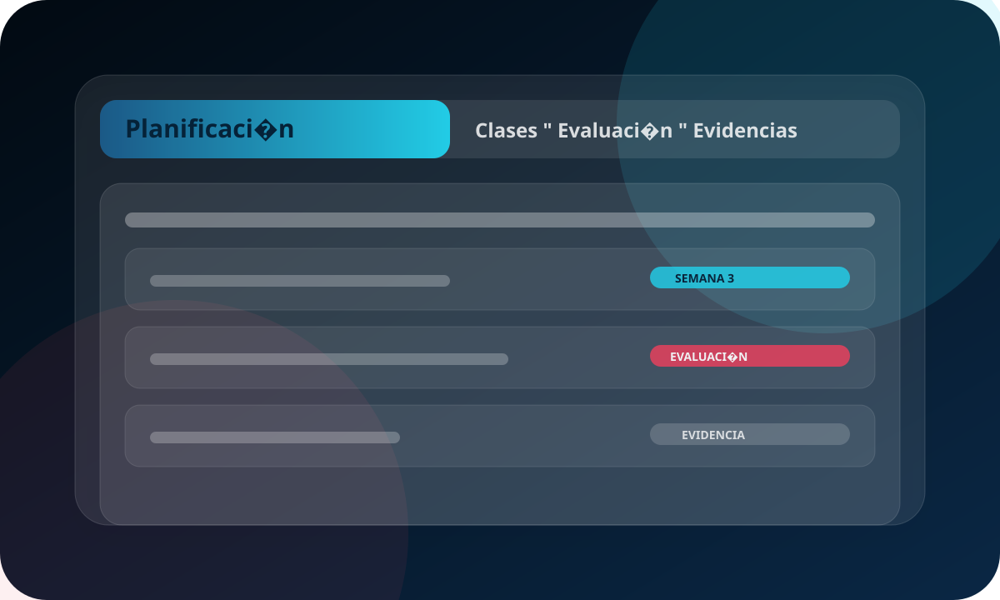

Comercio
StockPOS Pro
Ventas en mostrador, caja, inventario y reportes para tomar decisiones.
PHPMySQLJSBootstrap
Ingeniero en Sistemas Informáticos · Especialista en educación por competencias
Docencia en colegios técnicos y en UNVES (Facultad Politécnica) · Desarrollo de software y servicios profesionales · Coordinación pedagógica
Unimos educación por competencias, ingeniería de software y soluciones digitales para instituciones, comercios y equipos que necesitan orden, datos claros y procesos más simples.
Impacto
Más orden, menos carga manual y decisiones con datos claros.
Digitalización y automatización para reducir tareas repetitivas.
Validaciones y flujos claros para registrar datos sin inconsistencias.
Tableros y exportables para tomar decisiones con números.
Soporte, mejoras por etapas y capacitación práctica al equipo.
Ingeniero en Sistemas Informáticos y especialista en educación por competencias: del aula técnica y universitaria al desarrollo de software y servicios profesionales.
Sobre mí
Soy ingeniero en Sistemas Informáticos y especialista en educación por competencias, con base en Villarrica, Guairá (Paraguay). Enseño en colegios técnicos y en la Universidad de Villarrica del Espíritu Santo (UNVES), Facultad Politécnica, donde llevo 19 años en la carrera de Ingeniería en Sistemas Informáticos con la asignatura Ingeniería de Software (ciclo de vida, análisis, diseño y buenas prácticas). También participo como representante en el Consejo Superior Universitario de la facultad.
En el ámbito profesional me dedico al desarrollo de software y a servicios profesionales a medida: diseño y construyo soluciones digitales para instituciones educativas, comercios, clínicas y proyectos que requieren sistemas administrativos claros y estables. Me motiva acercar la tecnología a la educación: planificar mejor, registrar datos sin errores y liberar tiempo para enseñar y atender a las personas. Uso principalmente PHP y MySQL en el servidor, interfaces con Bootstrap y JavaScript, y priorizo sistemas que el equipo pueda mantener y entender.
Stack
Herramientas que uso en proyectos reales: del servidor al diseño responsive.
Qué hago
Competencias que combino según tu institución o empresa.
Paneles de gestión, reportes, roles de usuario y bases de datos relacionales.
Secuencias didácticas, evaluación y acompañamiento a equipos.
Flujos internos, expedientes y estadísticas para decisiones.
Menos carga manual: alertas, listados y validaciones.
Talleres orientados a resultados concretos en el trabajo diario.
Proyectos que integran tecnología de forma pedagógica.
Oferta
Podés combinar varios según la etapa de tu proyecto.
Desarrollo a medida según tus reglas de negocio.
Presencia clara para colegios, fundaciones y organismos.
Ventas, stock y reportes operativos.
Pacientes, historias y documentación respaldada.
Gestión académica y herramientas para dirección y equipo.
Qué conviene implementar primero y cómo mantenerlo.
Informática aplicada, productividad y buenas prácticas.
Paquetes
Elegí una base y la adaptamos a tu institución o empresa.
Landing/Institucional con WhatsApp, correo y secciones clave.
Panel de gestión con roles, datos y reportes accionables.
Plan, capacitación y mejoras continuas con soporte.
¿No sabés cuál conviene? Escribime y te recomiendo la mejor opción según tu caso.
Portfolio
Algunos sistemas desarrollados o liderados; siempre con foco en uso real.

Ventas en mostrador, caja, inventario y reportes para tomar decisiones.
PHPMySQLJSBootstrap

Sistema médico para gestión de fichas de pacientes, consultas, documentos, recetas y certificados, con acceso seguro y organización completa.
PHP MySQL Bootstrap

Sistema odontológico profesional para gestión de pacientes, historia clínica, consultas, turnos, tratamientos y control de pagos. Ideal para consultorios odontológicos modernos.
PHP MySQL Bootstrap

Sistema clínico profesional con gestión de pacientes, consultas, recetas, certificados y turnos. Ideal para clínicas y consultorios modernos.
PHPMySQLBootstrap

Contratos de alquiler, cuotas, pagos y estado de inmuebles.
PHPMySQLJavaScript

Planes de clase, evaluaciones y documentación pedagógica unificada.
PHPMySQLBootstrap
Confianza
Ejemplos típicos de cómo se aplican las soluciones en la práctica.
“Pasamos de planillas sueltas a un sistema ordenado. Ahora los reportes salen en minutos.”
“Con roles y validaciones, el equipo carga datos sin errores y se controla mejor la asistencia.”
“Implementación por etapas: empezamos con lo crítico y fuimos mejorando sin frenar el trabajo.”
Planificación docente, buscadores académicos, gestión institucional y reportes.
Ventas, stock, arqueos y control de caja con exportables.
Pacientes, historias, recetas, certificados y documentación respaldada.
Webs claras, formularios, landing para servicios y contacto directo.
Recorrido
Roles que hoy conviven en cada proyecto.
Universidad de Villarrica del Espíritu Santo (UNVES). Hace 19 años formo parte del claustro de la Facultad Politécnica en la carrera de Ingeniería en Sistemas Informáticos, con la asignatura Ingeniería de Software. Además, soy representante en el Consejo Superior Universitario de la facultad. En el aula trabajo ingeniería del software, modelado del dominio, proceso de desarrollo y calidad, vinculando teoría con la práctica profesional.
Enseñanza en el nivel técnico, alineada a educación por competencias y a la formación práctica que exige el mundo laboral.
Articulación curricular y seguimiento de equipos docentes.
Sistemas a medida con PHP y MySQL, modelado de datos, aplicaciones web y acompañamiento a instituciones y empresas.
Herramientas alineadas a los procesos reales de cada institución.
Talleres para docentes y estudiantes con enfoque práctico.
Coordinamos una primera conversación sin compromiso para ver alcance y tiempos.
Trabajemos juntosEscribime
Formulario, WhatsApp o correo — como te resulte más cómodo.
Los datos de teléfono y correo públicos se cargan desde assets/js/site-config.js para que solo tengas que editar un archivo.
+595 9XX XXX XXX
Villarrica, Guairá, Paraguay